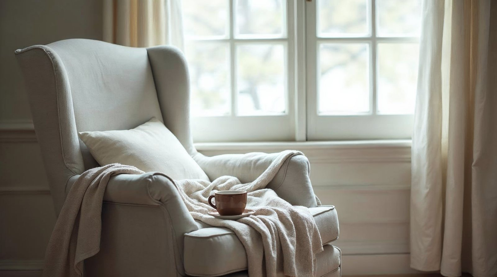
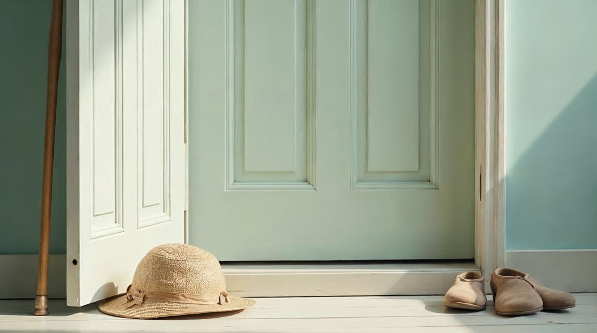
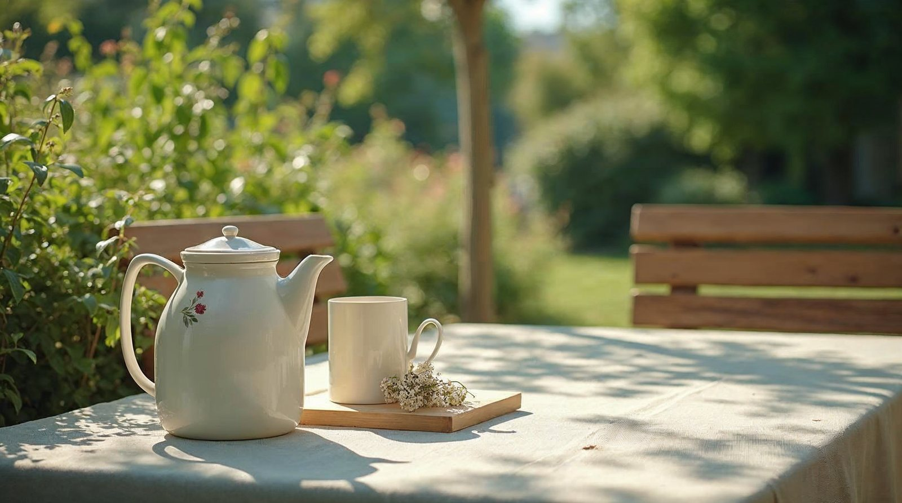
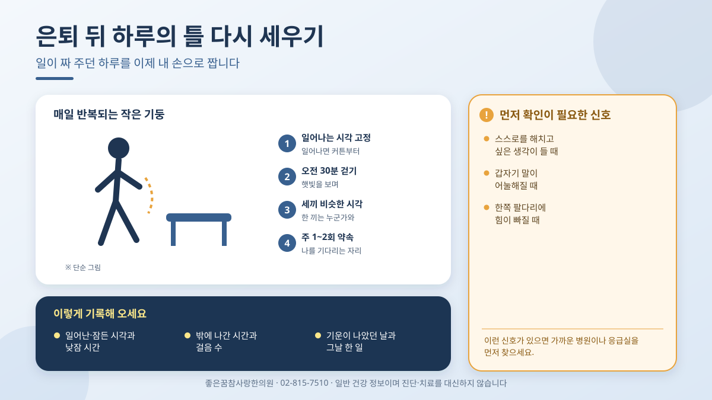

이종호 한의사 감수좋은꿈참사랑한의원 대표원장 (한의사 면허번호 19769)발행 2026-11-26 · 수정 2026-11-26
이 글의 차례
아침 여섯 시, 알람이 울리지 않는데도 눈이 떠집니다. 수십 년 동안 그 시각에 일어났으니까요. 그런데 일어나서 할 일이 없습니다. 신문을 펼쳤다 접고, 텔레비전을 켰다 끄고, 소파에 누웠다 앉았다 하다 보면 어느새 점심입니다. 오후는 더 깁니다.
은퇴하신 분들이 진료실에 오시면 처음에는 허리나 무릎, 소화 이야기를 꺼내십니다. 그런데 조금 더 이야기를 나누다 보면 이런 말씀이 나옵니다. "일을 그만두니 홀가분할 줄 알았는데, 이상하게 기운이 없고 아무것도 하기 싫습니다." 가족에게는 쉽게 꺼내지 못한 이야기라고 하십니다.
은퇴는 일을 내려놓는 것이지만, 동시에 수십 년 동안 하루를 붙잡아 주던 틀이 한꺼번에 사라지는 일이기도 합니다. 출근 시각, 점심 동료, 해야 할 일, 나를 찾는 사람들. 그 틀이 사라진 자리에서 몸과 마음이 길을 잃는 것은 자연스러운 일입니다.
오늘 글에서는 은퇴 뒤 찾아오는 무기력이 왜 생기는지, 몸에서는 어떤 모습으로 나타나는지, 그리고 새로운 하루의 틀을 어떻게 다시 세워 갈 수 있는지를 정리해 보겠습니다. 거창한 계획보다 작은 습관 하나에서 시작하면 됩니다.

은퇴 뒤 무기력은 어떤 모습으로 오나요
은퇴 뒤 무기력은 대개 은퇴 직후보다 몇 달 지나서 찾아옵니다. 처음에는 여행도 다니고 미뤄 둔 일도 하며 바쁘게 지내다가, 그 일들이 하나둘 끝나면서 빈 시간이 길어집니다. 진료실에서 자주 듣는 모습은 이렇습니다.
- 아침에 일어나도 몸이 무겁고 다시 눕고 싶다
- 하루가 너무 길게 느껴지고 시간이 잘 가지 않는다
- 예전에 좋아하던 일도 시큰둥하다
- 낮잠이 길어지고 밤에는 잠이 얕아졌다
- 입맛이 줄었거나, 반대로 군것질과 야식이 늘었다
- 사소한 일에 서운하고 가족에게 짜증이 늘었다
이 가운데 여러 가지가 겹친다면 하루의 틀이 흔들리고 있다는 신호일 수 있습니다. 나이 탓이라고 넘기기보다, 지금의 생활을 한 번 찬찬히 들여다볼 때입니다.
왜 은퇴 뒤에 기운이 빠질까요
일은 생각보다 많은 것을 해 주고 있었습니다. 정해진 시각에 일어나게 하고, 하루에 몇천 보를 걷게 하고, 사람들과 이야기를 나누게 하고, 내가 쓸모 있는 사람이라는 느낌을 주었습니다. 은퇴하면 이 모든 것이 한꺼번에 줄어듭니다.
몸을 움직이는 양이 줄면 근육이 조금씩 빠지고, 근육이 빠지면 쉽게 지치니 또 덜 움직이게 됩니다. 이 고리가 몇 달 이어지면 계단이 힘들어지고, 외출이 귀찮아지고, 집에 있는 시간이 더 길어집니다.
하루의 리듬이 흐트러지는 것도 큽니다. 늦게 일어나고, 끼니가 들쭉날쭉하고, 낮잠이 길어지면 밤잠이 얕아집니다. 밤에 잘 못 자니 낮에 또 처지고, 처지니 또 눕게 됩니다. 몸의 시계가 흐려지면 기분도 함께 가라앉기 쉽습니다.
역할의 변화도 마음에 무게를 줍니다. 직함으로 불리던 사람이 하루아침에 아무도 찾지 않는 사람이 된 것 같은 허전함, 집에서 내 자리가 어디인지 모르겠다는 어색함이 무기력으로 이어지기도 합니다.
한의학에서는 이런 상태를 기운이 가라앉고 흐름이 정체된 모습으로 설명하기도 합니다. 진단명이 아니라 진찰할 때 몸의 경향을 살피는 전통적인 표현입니다. 몸이 무겁고 붓는 분, 기운이 없고 숨이 짧은 분, 속이 답답하고 한숨이 잦은 분처럼 사람마다 모습이 다릅니다.
은퇴 뒤 무기력과 우울은 어떻게 다를까요
무기력은 하루의 틀이 흔들리면서 생긴 처짐에 가깝습니다. 그래서 약속이 생기거나 손주가 놀러 오거나 좋아하는 일을 할 때는 기운이 조금 돌아옵니다. 생활의 틀을 다시 세우면 꽤 달라질 수 있는 상태입니다.
반면 두 주 넘게 거의 매일 기분이 가라앉아 있고, 무엇을 해도 즐겁지 않으며, 잠과 입맛이 함께 무너지고, 내가 짐이 된 것 같다는 생각이 자주 든다면 우울감이 깊어진 상태일 수 있습니다. 이런 경우에는 정신건강의학과 상담을 함께 받아 보시길 권합니다.
기억이 깜빡하는 일이 부쩍 늘었다면 그것도 함께 살펴보세요. 무기력하고 우울할 때도 집중이 떨어져 깜빡할 수 있지만, 같은 질문을 반복하거나 익숙한 길을 헤매는 일이 생긴다면 신경과나 보건소의 치매안심센터에서 검사를 받아 보시는 것이 마음도 편합니다.

몸에서 함께 살펴볼 것
무기력이 마음의 문제만은 아닐 수 있습니다. 갑상선 기능 저하, 빈혈, 혈당 변화, 수면 무호흡처럼 몸의 변화가 기운을 떨어뜨리기도 합니다. 최근 건강검진을 받은 지 오래되었다면 이번 기회에 한 번 받아 보시길 권합니다.
드시는 약이 많아졌다면 약 때문에 처지는 것은 아닌지도 처방한 선생님과 상의해 보세요. 혈압약, 수면제, 진통제처럼 여러 약을 함께 드시면 낮에 졸리거나 기운이 없는 느낌이 생길 수 있습니다. 약은 상의 없이 줄이거나 끊지 마시고 처방한 곳과 먼저 이야기하세요.
잠의 리듬을 다시 잡는 법
은퇴 뒤에는 잠의 리듬이 가장 먼저 흔들립니다. 정해진 출근 시각이 없으니 잠드는 시각이 늦어지고, 늦게 일어나니 낮이 짧아지고, 저녁이 되어도 졸리지 않습니다. 반대로 너무 일찍 잠자리에 들어 새벽 두세 시에 깨는 분도 많습니다.
잠의 리듬은 일어나는 시각에서 시작됩니다. 전날 늦게 잤더라도 아침에는 비슷한 시각에 일어나 햇빛을 보는 것이 좋습니다. 아침 햇빛은 몸의 시계를 맞춰 주어, 저녁이 되면 자연스럽게 졸음이 오도록 돕습니다.
저녁 여덟 시 전부터 텔레비전 앞에서 꾸벅꾸벅 조는 습관이 있다면, 그 시간에 가볍게 집 안을 정리하거나 짧은 산책을 해 보세요. 초저녁 졸음을 넘기면 밤잠이 조금 더 길게 이어지는 분이 많습니다.
은퇴를 앞두고 있다면
아직 은퇴 전이라면 몇 달 전부터 은퇴 뒤의 하루를 미리 그려 보시길 권합니다. 무엇을 하며 지낼지, 누구와 만날지, 몸을 어떻게 움직일지를 대략이라도 정해 두면 빈 시간이 덜 막막합니다.
일 말고 나를 설명할 수 있는 것을 하나쯤 미리 만들어 두는 것도 좋습니다. 취미, 배움, 동네 모임처럼 직함과 상관없이 내가 즐겁게 할 수 있는 일이 있으면 은퇴 뒤의 허전함이 한결 덜합니다.
스스로 점검해 보기
지금 나의 하루가 어떤지 아래 질문으로 가볍게 점검해 보세요.
- 아침에 일어나는 시각이 일정한가요?
- 하루에 집 밖으로 나가는 날이 일주일에 며칠인가요?
- 가족 말고 일주일에 이야기를 나누는 사람이 있나요?
- 낮잠을 한 시간 넘게 자는 날이 많은가요?
- 기다려지는 일정이 일주일에 하나라도 있나요?
먼저 이렇게 여쭙니다
처음 오시면 저는 대략 이런 순서로 여쭙니다. 미리 생각해 오시면 이야기가 훨씬 수월해집니다.
- 은퇴한 지 얼마나 되었고, 그 뒤로 하루는 어떻게 보내시나요?
- 잠드는 시각과 깨는 시각, 낮잠 시간은 어떠신가요?
- 끼니는 몇 시에, 누구와 드시나요?
- 하루에 얼마나 걷거나 움직이시나요?
- 최근 체중이나 입맛, 대변에 달라진 점이 있나요?
- 드시는 약과 앓고 계신 질환이 있나요?
일상에서 먼저 해 볼 수 있는 것
은퇴 뒤의 하루는 스스로 틀을 만들어야 합니다. 거창한 계획보다 매일 같은 시각에 반복되는 작은 기둥 몇 개를 세우는 것이 출발점입니다.
- 일어나는 시각을 일정하게 정하고, 일어나면 커튼부터 열기
- 오전에 한 번은 집 밖으로 나가 햇빛을 보며 30분 걷기
- 세끼를 비슷한 시각에 드시고, 가능하면 한 끼는 누군가와 함께 먹기
- 낮잠은 오후 이른 시각에 30분 이내로 줄이기
- 일주일에 한두 번은 정해진 약속이나 모임 만들기
- 저녁에는 텔레비전 대신 가벼운 스트레칭이나 산책으로 하루 마무리하기
근력을 지키는 일도 중요합니다. 의자에서 손을 짚지 않고 일어났다 앉기, 벽을 짚고 발뒤꿈치 들기처럼 집에서 할 수 있는 간단한 운동부터 시작해 보세요. 다리 힘이 붙으면 외출이 덜 부담스러워지고, 외출이 늘면 기운도 함께 돌아옵니다.
새로운 역할을 찾는 것도 도움이 됩니다. 동네 복지관이나 주민센터의 강좌, 도서관 모임, 봉사 활동, 텃밭 가꾸기처럼 내가 할 일이 있고 나를 기다리는 사람이 있는 자리를 하나 만들어 보세요. 거창하지 않아도 됩니다. 일주일에 한 번, 두 시간이면 충분합니다. 나를 기다리는 자리가 하나 생기면 그 전날 밤부터 하루가 달라지는 것을 느끼실 수 있습니다.
부부가 함께 집에 있는 시간이 갑자기 늘면서 서로 부딪히는 일도 생깁니다. 각자 혼자 보내는 시간과 함께 보내는 시간을 대략 정해 두면 서로 숨 돌릴 틈이 생기고 다툼도 줄어듭니다.
식사도 하루의 틀을 세우는 좋은 기둥입니다. 혼자 드시는 날이 많다면 반찬 가짓수보다 단백질 한 가지를 챙기는 데 마음을 써 보세요. 두부, 달걀, 생선, 콩처럼 손쉽게 준비할 수 있는 것을 끼니마다 곁들이면 근력과 기운을 지키는 데 도움이 됩니다.
새로운 것을 배우는 일은 머리와 마음을 함께 깨웁니다. 악기, 외국어, 그림, 휴대폰 사진 찍기처럼 조금 서툴러도 즐거운 일을 하나 골라 보세요. 매주 정해진 시간에 배우러 나가는 것만으로도 기다려지는 일정이 생깁니다.
가족이 함께 알아 두면 좋은 것
은퇴한 가족이 부쩍 말수가 줄고 집에만 계신다면, 쉬라는 말보다 함께 나가자는 말이 더 도움이 될 수 있습니다. 함께 장을 보거나 산책을 하거나 작은 일을 부탁드리는 것만으로도 하루에 틀이 하나 생깁니다.
조언보다는 이야기를 들어 드리는 것이 먼저입니다. 은퇴의 허전함은 겪어 보지 않으면 잘 모르는 마음입니다. 서운함이나 짜증이 늘었다면 그 뒤에 있는 허전함을 먼저 알아봐 주세요.
한의원에서 함께 살필 수 있는 경우
- 아침에 몸이 무겁고 하루 종일 처지는 느낌이 이어지는 경우
- 낮잠이 길어지고 밤잠이 얕으며 새벽에 일찍 깨는 경우
- 입맛이 줄고 소화가 더디며 변비가 생긴 경우
- 속이 답답하고 한숨이 잦으며 작은 일에 마음이 상하는 경우
- 허리와 무릎이 불편해 외출과 걷기가 줄어든 경우
좋은꿈참사랑한의원에 오시면 모든 분의 맥을 먼저 짚고, 잠, 소화, 대변, 몸의 무거움을 여쭈며, 허리와 무릎처럼 걷기를 막는 불편이 있는지 함께 살펴봅니다.
진찰한 내용을 바탕으로 하루의 틀에 세울 기둥 하나와 함께 침, 한약 상담 가운데 지금 상태에 맞는 것을 정합니다. 한약을 상의할 때는 드시는 약을 모두 확인하고 신중하게 정합니다. 처방받은 약은 상의 없이 멈추지 않습니다.
진료를 받으러 오시는 일 자체가 하루의 기둥이 되기도 합니다. 정해진 날 정해진 시각에 집을 나서고, 오가는 길을 걷는 것만으로도 한 주의 리듬이 조금씩 잡혀 갑니다.
이렇게 기록해 오시면 상담이 쉬워집니다
2주 정도만 짧게 적어 보세요. 달력에 한 줄씩 적는 것으로 충분합니다.
- 일어난 시각과 잠든 시각, 낮잠 시간
- 집 밖으로 나간 시간과 걸은 거리나 걸음 수
- 끼니 시각과 함께 먹은 사람
- 기운이 조금 나았던 날과 그날 한 일
- 마음이 유난히 가라앉았던 날
기록을 나란히 보면 기운이 나았던 날의 공통점이 보이기 시작합니다. 그날의 습관을 다른 날에도 하나씩 옮겨 오는 것이 다음 걸음이 됩니다.

새로운 하루의 틀을 세우며
은퇴는 끝이 아니라 하루를 내 손으로 다시 짜는 시작입니다. 처음에는 어색하고 허전한 것이 당연합니다. 수십 년 동안 일이 대신 짜 주던 하루를 이제 직접 짜야 하니까요.
이번 주에는 아침에 일어나는 시각 하나와 오전 산책 하나만 정해 보세요. 다음에 오시면 그 일주일이 어땠는지부터 함께 이야기해 보겠습니다.
이런 증상은 먼저 확인이 필요합니다
- 스스로를 해치고 싶은 생각이 들거나 주변을 정리하는 모습이 보이는 경우
- 갑자기 말이 어눌해지고 한쪽 팔다리에 힘이 빠지거나 얼굴 한쪽이 처지는 경우
이런 신호가 있으면 한의원보다 가까운 병원이나 응급실을 먼저 찾으세요.
마음이 많이 힘들 때는 자살예방상담전화 ☎ 109에서 언제든 이야기를 나눌 수 있습니다.
함께 읽으면 좋은 글
- 은퇴하고 나서 하루가 길게 느껴지고 무기력할 때는 어떻게 살피나요?
- 어르신이 말수가 줄고 외로움과 우울이 길어질 때, 가족은 무엇을 살피면 좋을까요?
- 나이 들며 잠이 얕아지고 밤에 자주 깨는 어르신 불면은 어떻게 살피나요?
- 어르신이 기운이 없고 자꾸 눕고만 싶어 하실 때는 무엇을 살피나요?
- 기분이 2주 넘게 가라앉고 잠·입맛·흥미가 떨어질 때는 어떻게 살피나요?

여쭙는 것
- 은퇴한 지 얼마나 되었고, 그 뒤로 하루는 어떻게 보내시나요?
- 잠드는 시각과 깨는 시각, 낮잠 시간은 어떠신가요?
- 끼니는 몇 시에, 누구와 드시나요?
생활에서 해 볼 것
- 일어나는 시각을 일정하게 정하고, 일어나면 커튼부터 열기
- 오전에 한 번은 집 밖으로 나가 햇빛을 보며 30분 걷기
- 세끼를 비슷한 시각에 드시고, 가능하면 한 끼는 누군가와 함께 먹기
한의원에서 함께 살필 것
- 아침에 몸이 무겁고 하루 종일 처지는 느낌이 이어지는 경우
- 낮잠이 길어지고 밤잠이 얕으며 새벽에 일찍 깨는 경우
- 입맛이 줄고 소화가 더디며 변비가 생긴 경우
먼저 확인이 필요한 신호
- 스스로를 해치고 싶은 생각이 들거나 주변을 정리하는 모습이 보이는 경우
- 갑자기 말이 어눌해지고 한쪽 팔다리에 힘이 빠지거나 얼굴 한쪽이 처지는 경우
한눈에 보는 표
| 구분 | 핵심 |
|---|---|
| 여쭙는 것 | 은퇴한 지 얼마나 되었고, 그 뒤로 하루는 어떻게 보내시나요? 잠드는 시각과 깨는 시각, 낮잠 시간은 어떠신가요? |
| 생활에서 해 볼 것 | 일어나는 시각을 일정하게 정하고, 일어나면 커튼부터 열기 오전에 한 번은 집 밖으로 나가 햇빛을 보며 30분 걷기 |
| 한의원에서 함께 살필 것 | 아침에 몸이 무겁고 하루 종일 처지는 느낌이 이어지는 경우 낮잠이 길어지고 밤잠이 얕으며 새벽에 일찍 깨는 경우 |
| 먼저 확인이 필요한 신호 | 스스로를 해치고 싶은 생각이 들거나 주변을 정리하는 모습이 보이는 경우 갑자기 말이 어눌해지고 한쪽 팔다리에 힘이 빠지거나 얼굴 한쪽이 처지는 경우 |
자주 묻는 질문
은퇴하고 쉬는 건데 왜 이렇게 기운이 없을까요?
일이 대신 잡아 주던 하루의 틀과 움직임, 사람과의 만남이 한꺼번에 줄면서 몸과 마음이 처지는 경우가 많습니다. 일어나는 시각과 오전 산책처럼 작은 기둥부터 다시 세워 보세요.
낮잠을 자면 안 되나요?
낮잠 자체가 나쁜 것은 아닙니다. 다만 오후 늦게 오래 자면 밤잠이 얕아지기 쉬우니, 오후 이른 시각에 30분 이내로 줄여 보시길 권합니다.
무기력한 건지 우울증인지 어떻게 알 수 있나요?
두 주 넘게 거의 매일 기분이 가라앉고 무엇을 해도 즐겁지 않으며 잠과 입맛이 함께 무너졌다면 우울감이 깊어진 상태일 수 있습니다. 정신건강의학과 상담을 함께 받아 보세요.
드시는 약이 많은데 한약을 함께 드셔도 되나요?
드시는 약을 모두 확인하고 신중하게 정합니다. 약 봉투나 처방전 사진을 가져와 주시면 함께 살펴봅니다.
가족이 어떻게 도와드리면 좋을까요?
쉬라는 말보다 함께 나가자는 말이 도움이 될 때가 많습니다. 함께 산책하거나 작은 일을 부탁드리고, 조언보다 이야기를 먼저 들어 드려 주세요.
좋은꿈참사랑한의원은 재진 때 지난번 이야기부터 이어서 여쭙니다. 진료시간과 예약은 오시는 길에서 확인하세요.
어디서 상담받을 수 있나요?
좋은꿈참사랑한의원은 서울 동작구 만양로2길 2 신성빌딩 3층·5층(서울 동작구 상도동, 7호선 상도역 3번 출구 근처)에 있습니다. 한의사 3명(이종호 대표원장, 조영기 수석진료원장, 정원영 진료원장)이 진료합니다. 진료시간은 평일 09:30~20:00(점심 13:00~14:00), 토·일·공휴일 09:30~15:00이며, 방문 전 전화로 확인을 권합니다. 예약은 네이버 예약, 카카오톡 상담, 전화 02-815-7510로 받습니다.
이 글은 일반적인 건강 정보이며 개인의 진단이나 치료를 대신하지 않습니다. 증상이 있거나 복용 중인 약이 있다면 진료를 통해 확인하세요. 치료 효과는 개인마다 다를 수 있습니다.
작성 기준: 일반적으로 알려져 있는 건강 정보를 참고해 정리했습니다(대표원장 감수). 증상 기록은 1~2주 동안 하루 1회, 비슷한 시간에 적어 오시면 지난 상태와 비교하기 쉽습니다.